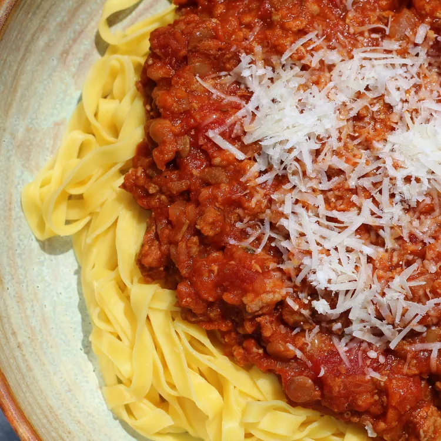

Bolognese Recipe

Description
One of the ultimate “comfort food” dishes. This particular recipe runs and
in my family and was initially passed down by mom, little twists and improvements have
been added by my sister and I through the years. Here you will find the classical base
recipe and instructions and some tasty alternatives will follow.
Ingredients
- 1 kg lean beef minced meat
- 2 medium sized onions
- 1 can tomato puree
- 1 can diced tomatoes
- 50 g tomato paste
- 100 ml olive oil
- 4 garlic cloves
- 4 tbsp beef stock
- 1 tbsp salt
- 1 tbsp pepper
- 500 g linguine
- 100 g parmesan
- Optional:
- 4+ chillies (According to preference)
- 250 ml red wine
Steps
- Dice the onions and garlic (and chillies).
- Fry the diced onions in olive oil on 3/4 heat until they begin to soften. Add the diced garlic (and chillies) and stir. Cook until the onions are nice and soft but be careful not to fry the onions until brown as this could render them sour.
- Reduce the heat to 1/2 and add all of the minced meat. Break the mince into smaller clumps by hand. Cook until all the meat has browned.
- Once the meat has browned add the tomato paste, tomato puree, and diced tomatoes. Stir thoroughly in between each successive addition.
- Cover the pot with a lid and let it sit at 1/3 heat for 10 minutes.
- Add beef stock, salt, and pepper. Stir thoroughly and let it sit for another 10 minutes.
- Taste and add more stock, salt, pepper as needed. (add 250 ml red wine).
- Stir thoroughly and let it simmer on low heat for 30 minutes, stirring occasionally.
- In an additional pot boil some water and add linguine once you have a nice boil going. Add salt to pasta water.
- Once the linguine is ready turn off all heat and serve.
- Add some grated parmesan as a finishing touch and enjoy!